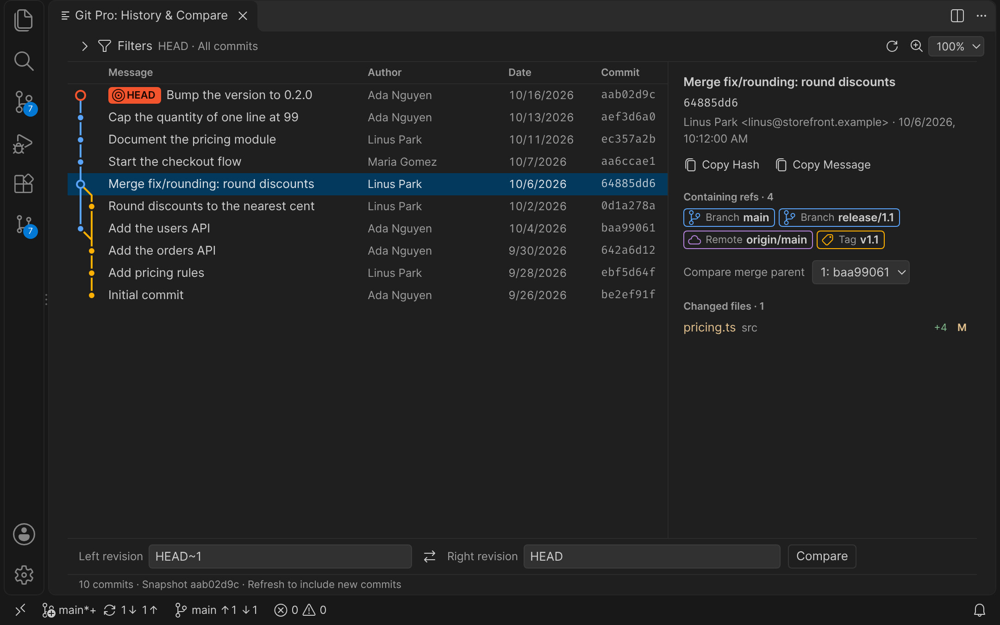

Git Pro
Git Pro
Git workflows for VS Code, from one sidebar.
Review and stage changes, write commits, explore History and recover rebases, merges and stashes.
git-pro.longtd.me
MIT · VS Code 1.100+

Git Pro
Review and stage changes, write commits, explore History and recover rebases, merges and stashes.
